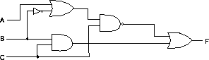

CMSC 311- Computer Organization
Fall 1995 - Assignment #1
Due (at the beginning of class) Thursday, September 14
- In class we saw that a NOR gate is functionally complete (it
can be used to represent the other 7 gates). Show that NAND is
functionally complete by showing how each of the other 7 gates
can be constructed using one or more NAND gates.
- Given this circuit:

- Write out the truth table.
- Write out the sum of products representation of F(A,B,C).
- Algebraically simply the following expressions to as few literals
as possible:
- (x + y) (x + y')
- xyz + x'y + xyz'
- x + xz + yx + xyz + x'yz
- y(xz' + ((x' + z)y)')
- From Mano, problem 1-4.
- From Mano, problem 1-5.
- The implication function is one of the 16 possible functions
of two Boolean variables. It is written x -> y, and is defined
by x -> y = x' + y.
- Prove or disprove the associativity of this function (does
(x -> y ) -> z = x -> (y -> z)).
- Prove or disprove the communtativity of this function (does
x -> y = y -> x).
- From Mano, problem 1-7.
- Use Karnaugh maps to find a simplified sum of products representation
of the following functions (you need to show the Karnaugh map
to receive full credit).
- F(a,b,c) = (0,1,2,3)
- F(a,b,c) = abc' + ab'c' + a'bc' + a'bc
- F(a,b,c,d) = (1,2,4,5,7,8,10,11,13,14)
- F(a,b,c,d) = a'b'c + ad + bd' + cd' + ac' + a'b'